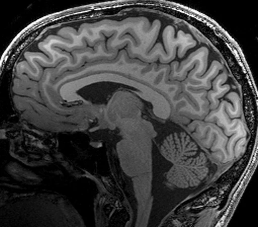
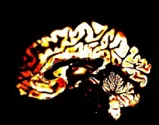
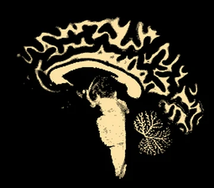
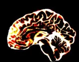
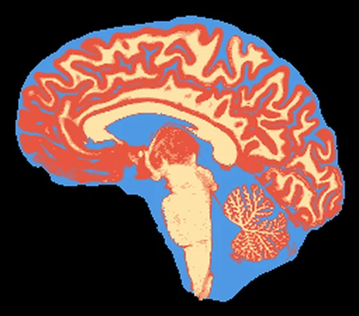

Voxel-based morphometry
Map gray and white matter, voxel by voxel
CAT segments each brain into gray matter, white matter and CSF with partial-volume precision, then registers it to MNI space with Dartel or Geodesic Shooting. Ready-made templates from 555 healthy subjects mean you don’t need study-specific templates for most studies.
- Modulated tissue maps, ready for statistics in SPM
- Total intracranial volume (TIV) and global tissue volumes
- Longitudinal models for plasticity, aging and development




